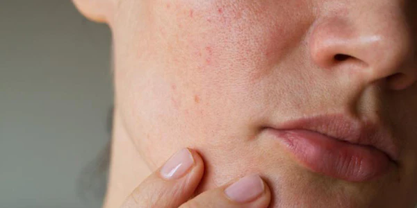

A pele seca possui deficiência nos dois quesitos: água e sebo. Ela possui aspecto áspero, opaco e sem brilho e também é considerada desidratada e com tendência a craquelar com facilidade. Com a falta de oleosidade e a perda excessiva de água, a capacidade de proteção da pele é reduzida, o que pode ocasionar coceira, vermelhidão ou repuxá-la com facilidade. Fatores hormonais, idade, condições climáticas, banhos quentes e demorados podem acentuar a situação.
A pele seca é uma pele que possui características muito específicas, como descamação, coceira, aparência sem viço e luminosidade, aspecto esbranquiçado, sensação de repuxamento, ardor, sensibilidade, manchas vermelhas e textura escamosa, podendo, nos casos mais graves, ter até feridas.
A pele seca possui um desequilíbrio nas glândulas sebáceas, que não produzem a quantidade ideal de óleo para lubrificar a pele. Esse tipo de pele é muitas vezes reativo, podendo ser causada por fatores extrínsecos (banhos quentes, por exemplo) e intrínsecos (alterações hormonais). Por isso, esse tipo de pele precisa sempre procurar um modo de equilibrar e compensar a ausência de oleosidade na pele, com produtos hidratantes que repõem essa falta.
É claro que a etapa de hidratação é fundamental nos cuidados diários. Mas, além desse processo, alguns hábitos diários vão contribuir como medidas preventivas para evitar o agravamento do problema. São eles:
Uma pele bem hidratada é aquela com uma composição equilibrada de óleos (sebo) e água.
Também é importante ficar atenta aos tipos de produtos que a sua pele está absorvendo, pois maquiagens e cosméticos convencionais contêm diversas substâncias químicas nocivas à saúde e agentes tóxicos que ressecam ainda mais a pele.
Dessa forma, especialmente pessoas com pele seca e tendência à sensibilidade, devem investir em produtos com formulações limpas, preferencialmente com ativos naturais, orgânicos e veganos.